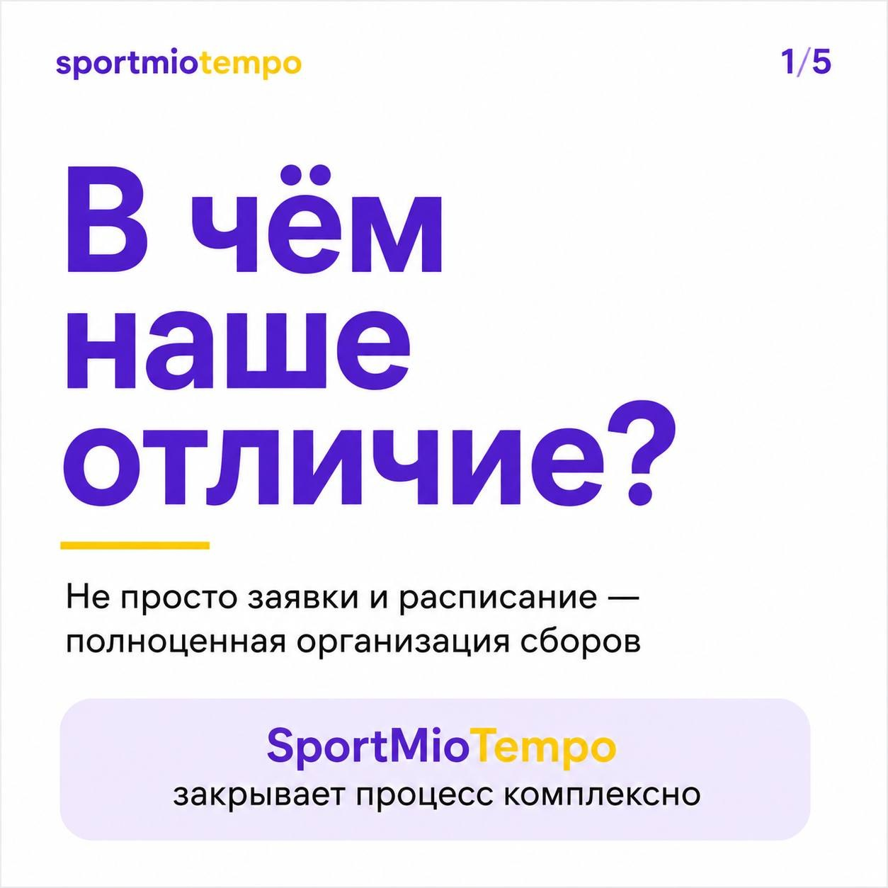
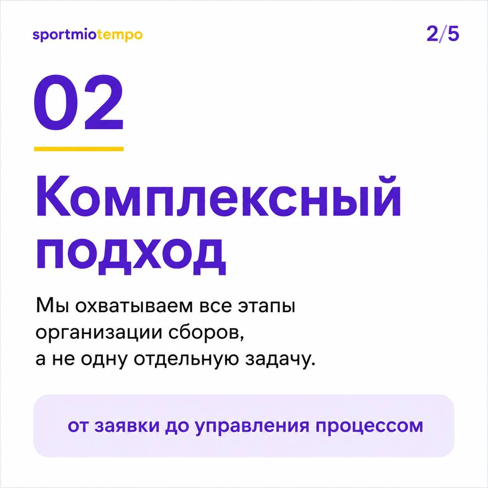
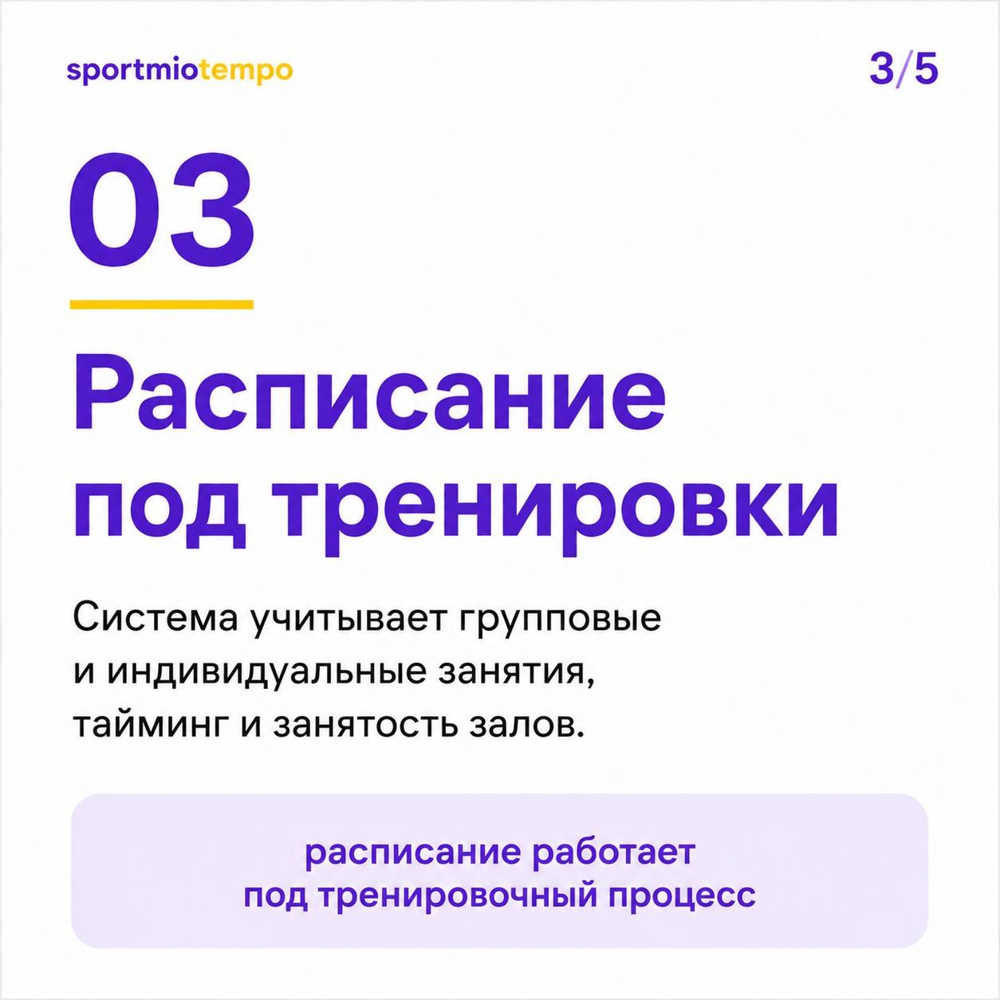
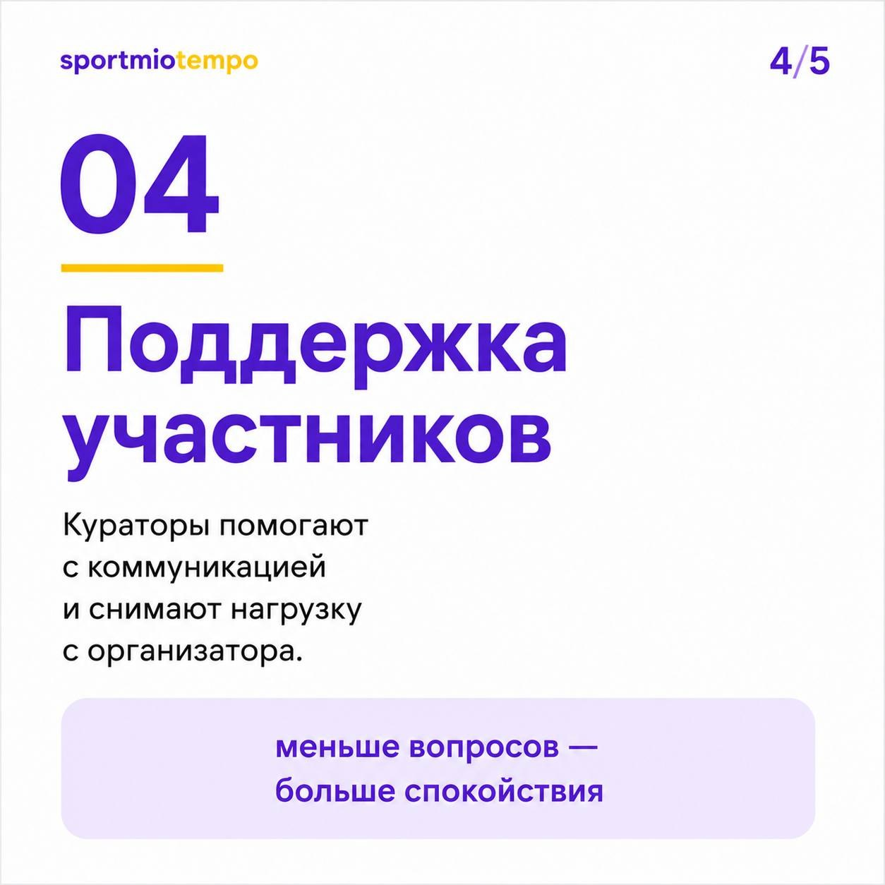
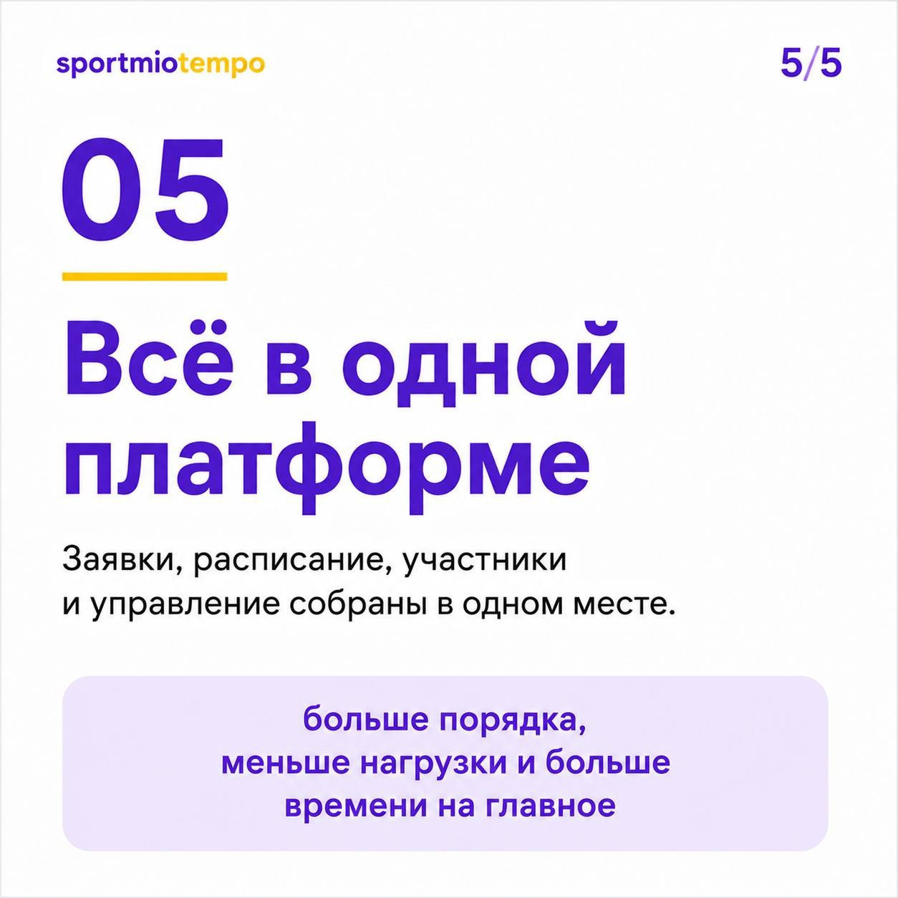

01
Текстовая карусель: «В чём наше отличие?»
- Задача
- Упаковать длинный текст о преимуществах сервиса в короткую и понятную серию карточек.
- Решение
- Минималистичная типографика, фиолетово-жёлтые акценты, один главный смысл на карточку.
- Результат
- Позиционирование стало легче считываться: сервис объясняется через конкретные выгоды.




